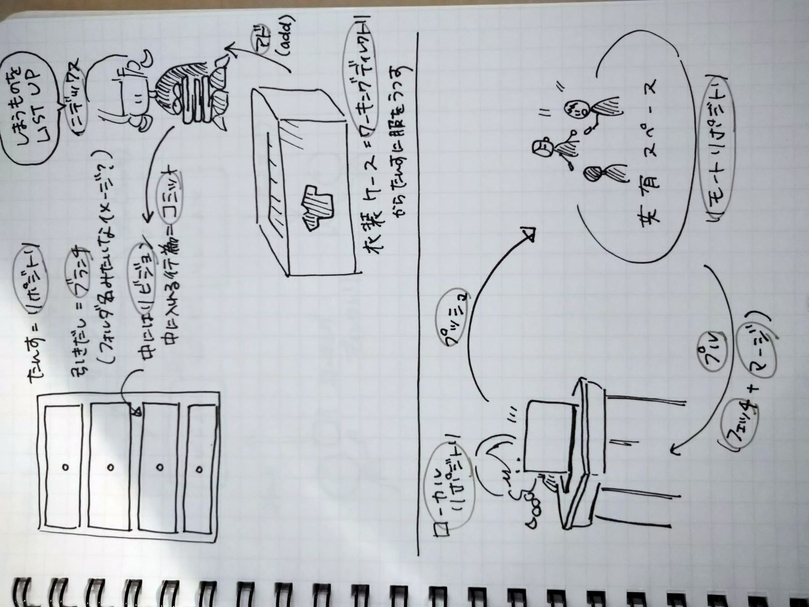
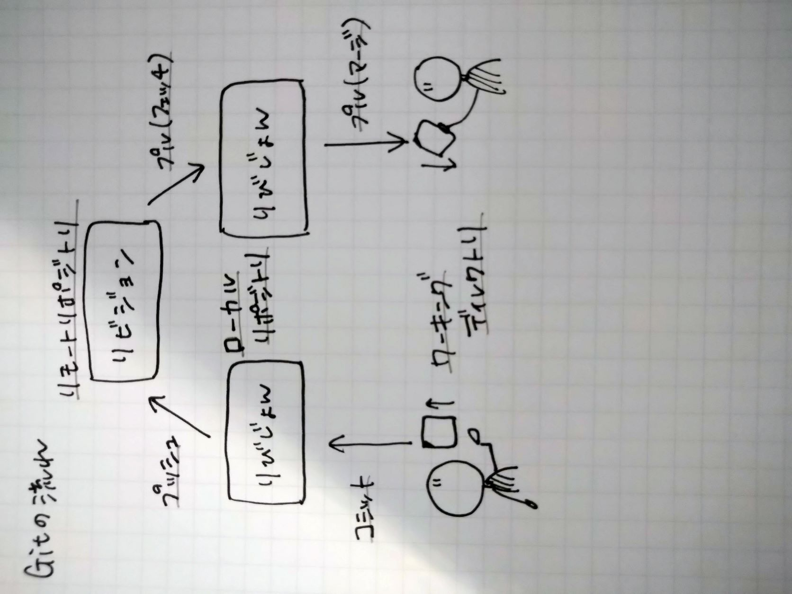

第一回課題
gitに関して
gitとは→「分散型バージョン(＝変更履歴)管理システム」というツール
→ソースコード(＝プログラミング言語で書かれたコンピュータプログラムを表現した文字列)に対する変更を複数人で共有し、作業の効率化を図れる
⇒パワポの共有の発展版みたいなイメージ？
バージョン管理システム(git)でできること
- ファイルに対しての変更履歴を残せる
→いつだれが何をしたかがいつでも振り返ることができる
- 変更履歴を共有できる
→1の振り返りが誰でも可能になる
- 以前のバージョンに簡単に戻せる
→最新バージョンに更新した後に問題が見つかったとき、いつでも特定のバージョンに戻ることができる
gitの仕組み
- リポジトリ
＝ファイルの変更履歴の貯蔵庫
→正体は「.git」というディレクトリ(＝データ分類、整理するための入れ物)で、リポジトリのすべてが詰まっている
- リビジョン(別名コミットログ)
＝リポジトリにためていく変更履歴(リポジトリにリビジョンが溜まっていく)
→リビジョンが持っている情報(→ブランチに紐づけて保存されている)
- リビジョン番号
- コミットしたユーザー名とメールアドレス
- コミットした日時
- コミットメッセージ
- 対象ファイルの変更情報
- コミット
＝ファイルの変更情報をコミットメッセージ(ファイルの変更点などをメモとして残すために記述。ファイル名のような見出しの役割？)とともにリポジトリに送る
→リポジトリにリビジョンを作成する際に必要な工程
- インデックス(別名ステージングエリア)
＝コミットの対象となるファイルを置いておく場所
→インデックスに登録するには「アド(add)」をする必要がある
→インデックスにアドされたファイルしかコミットできない
- ワーキングディレクトリ
＝リポジトリ(.git)が存在するディレクトリのこと(正直一番わからん)
→ワーキングディレクトリにあるディレクトリはインデックスにアド、リビジョンにコミットすることができる(ワーキングディレクトリにないとその作業ってできないの？)
→リポジトリで管理されている情報とワーキングディレクトリにある情報を比較することができる
- ローカル/リモートリポジトリ
→リポジトリを複数持ち共有する
→基本はローカル、共有したいときだけリモートを使う
①ローカルリポジトリ
=ローカル環境(＝個人のコンピュータ内環境)にあるリポジトリ
→個人のパソコン内でバージョン管理する
→ネットワークに接続できない環境下でもバージョン管理できる
②リモートリポジトリ
＝リモート環境にあるリポジトリ
→複数人が持つローカルリポジトリの内容が共有できる
- プッシュ(push)
＝ローカルリポジトリの情報をリモートリポジトリに反映させるためにする行為
→ブランチ単位で反映する(ワーキングディレクトリで指定したブランチ情報をそのままリモートリポジトリの指定ブランチに反映できる)
- プル(pull)
=リモートリポジトリの情報をローカルリポジトリに取り込みたいときにする行為
→1.「フェッチ(fetch)」(リモートリポジトリの情報をローカルリポジトリに取り込む)、 2.「マージ(merge)」(取り込んだリモートリポジトリのブランチ情報を、ローカルリポジトリのブランチに反映させる)の二工程を経ることによって完了する
→プルをするとワーキングディレクトリも更新される
参考画像


htmlに関して
htmlとは→ハイパーテキスト・マークアップ・ランゲージの略
→コンピュータが理解できるマークアップ(＝文章構成の指示)をするための言語
→web制作をするときは、ホームページ上に表示したい情報に対し、htmlという言葉でコンピュータに文章構成を指示するところから始まる
同じ階層にないとhtmlに入力した画像をブラウザ上で表示させることはできない
基本的に画像ファイルはpng,jpg,gif形式のいずれかにしておくとよい
→対応しているソフトやブラウザが多いから
/の意味＝～の中の
VScodeに新規ファイルを作成する時はファイル名の最後に「html」とつけないとローカルリポジトリ上に表示されない